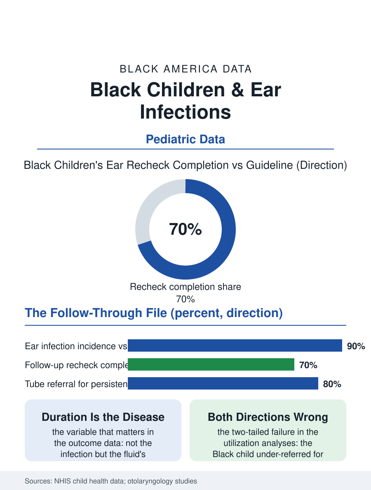

Black Public Health
Through Water: Black Children, Ear Infections, and Hearing
The infection is everyone's; the year of muffled hearing belongs to the missed recheck. The ear file.

Ear infections are childhood's most common bacterial illness and its most common reason for antibiotics and for surgery, and the Black child's file within it holds a distinctive pattern: infection rates comparable or lower, while the follow-through, the hearing evaluation, the tube surgery for the persistent fluid, and the speech consequences' screening, distributes unevenly. This article reads the ear file.
Fluid, Hearing, and the Quiet Delay
The otitis media data begin with the anatomy and the environment: the child's short eustachian tube, the daycare exposure file, the household smoke of the tobacco file's secondhand chapter, the bottle and pacifier variables, composing an incidence that peaks in the second year of life in every population, with the surveys placing the Black child's reported incidence at or modestly below the white figure. The file's turn is the persistent effusion, the fluid that remains after the infection's fever is gone, muffling the hearing by the margin of a hand over the ear during exactly the months the language acquisition file calls critical, and whose detection depends on the follow-up visit's pneumatic otoscopy, the recheck the guidelines schedule and the access file's families miss at the usual rates, so that the fluid's duration, the variable the outcomes actually track, distributes by the appointment system's reliability rather than by the infection's biology. The speech and language referral that the persistent fluid should trigger enters the queue of the speech-language file, whose waits are the system's standing scandal, and the school readiness data collect the result in the listening and language measures the kindergarten screen records. The antibiotic stewardship file runs beneath the whole account, the guidelines' watchful waiting for the uncomplicated case being a prescription for a return visit the access system must honor to be safe, so that stewardship and access stand or fall together, the deferred antibiotic being only as wise as the recheck is reliable, a dependency the guideline writers have begun, in the current editions, to state outright.
Tubes and the Surgical Threshold
The tympanostomy tube, the tiny vent placed in the eardrum, is the most common ambulatory surgery of American childhood, and its utilization by race has been studied in both directions across the decades, the older literature finding the Black child under-referred for the persistent effusion the guidelines name, the newer analyses complicating the picture with the overuse findings in the advantaged populations, the tube placed ahead of the watchful waiting the guidelines prescribe where the surgical access is easiest, so that the file's mature reading is the two-tailed one of the tonsil era's: the procedure's rate should follow the fluid's duration and the hearing's measurement, and deviations in both directions, the unreferred Black child with the year of fluid and the over-referred child of the surgical suburbs, are the guideline's failures in opposite signs. The hearing evaluation that anchors the guideline, the audiogram the toddler must cooperate with, is the access chain's narrowest link in the community clinic's schedule, and the systems that embedded the hearing screen in the primary care visit itself post the file's best detection numbers.
The Listening Child
The ear file closes on the classroom, because the effusion's muffled months coincide with the phonics foundation's laying, and the teacher's report, the child who does not attend, who answers beside the question, is the detection system of last resort in the file's data, the school nurse's screen catching the cases the clinic's recheck missed when the screening program's funding holds. The intervention stack is the file's modest and complete one: the smoke-free household of the tobacco file, the pneumococcal and influenza vaccines of the immunization file reducing the incidence at the source, the recheck kept, the hearing measured rather than assumed, the referral moved on the measurement. The surveys count the infections in the millions of episodes. The file's last entry is the quietest harm in this atlas, a child hearing the world's speech through water for a season of the language's building, in a case the system had every instrument to catch, the loss measured not in decibels but in the words that arrived muffled while the window was open, and the file's demand, a kept appointment and a hearing test, is among the smallest in these pages for the size of what it protects.
More in Black Public Health
Hypertension Among Black Adults: Prevalence, Control, and Consequences
About 55 percent of Black adults have hypertension — the highest rate of any U.S. group. Prevalence, onset, control, and the stroke, heart, and kidney consequences in the data.
Diabetes Among Black Adults: Prevalence and Complications
Nearly one in five Black adults has diabetes, diagnosed or undiagnosed — and its complications fall with particular weight. The CDC data on prevalence, control, and outcomes.
Black Life Expectancy: The Gap at Birth and Its Causes
Black life expectancy at birth is about 73 years, roughly five years below the national figure — the summary measure of every health gap in this section. The CDC data.
Source: National Health Interview Survey child health data; American Academy of Otolaryngology outcomes and guideline literature.